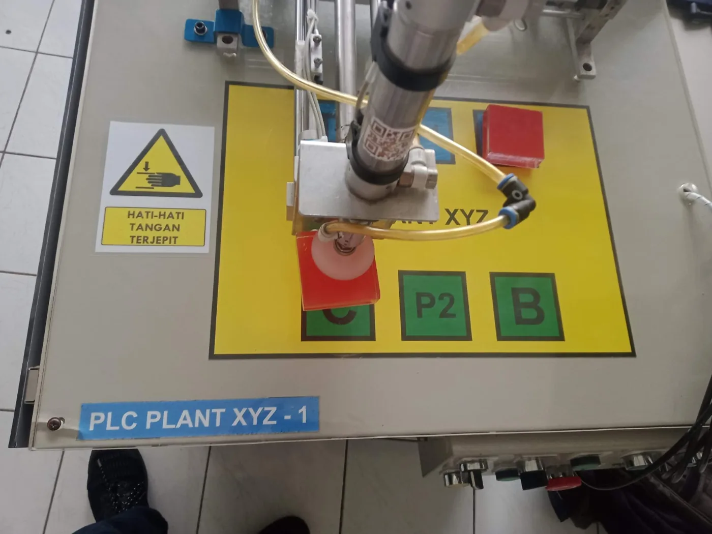
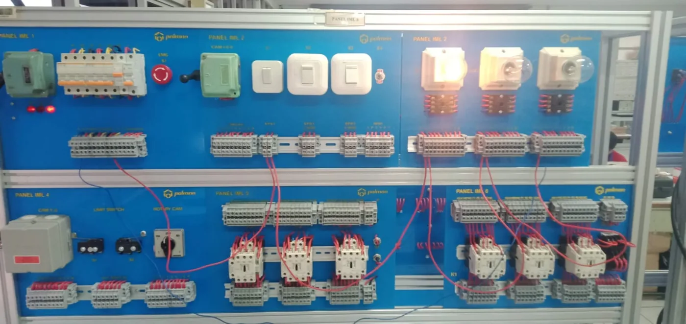
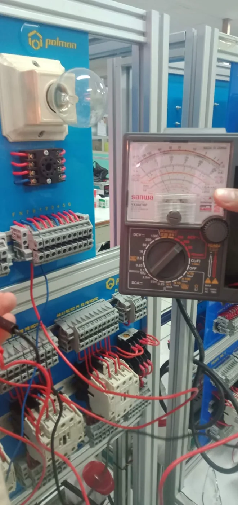
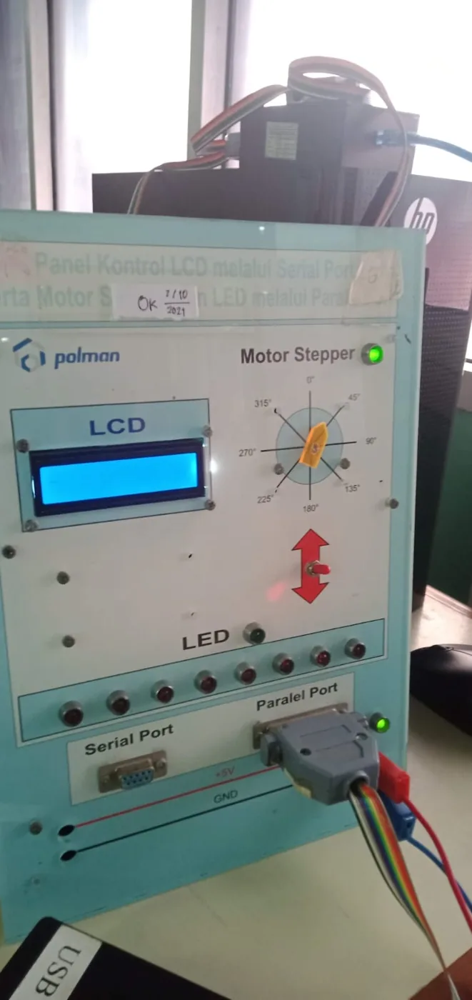
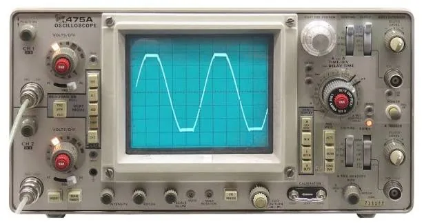

Laboratory Practice at Polman Bandung
Hands-on practice in electro-pneumatics, PLC automation, control-panel wiring, microcontroller interfacing and instrumentation during the D4 Mechatronics Engineering Technology programme.
Electro-pneumatic control practice
Electro-pneumatics combines compressed-air actuators with electrical control. In the laboratory, pneumatic cylinders and valves are mounted on a trainer board, connected with air tubing, and wired to a relay control panel so that every cylinder movement is commanded by an electrical circuit.
What the practice covers
- Reading pneumatic and electrical circuit diagrams and symbols
- Solenoid-operated directional control valves driving double- and single-acting cylinders
- Relay-based control logic, including self-holding and interlock circuits
- Sequential cylinder motion triggered by position sensors
- Wiring, tubing and troubleshooting of the complete circuit
Practice recordings
PLC-controlled training plant
In Industrial Automation I and II, PLC programs sequence sensors and actuators on a training plant. The PLC Plant XYZ rig uses a pneumatic vacuum gripper to pick up and place a block, tying together input/output addressing, PLC programming and pneumatic actuation.

Panel wiring and motor control
Panel boards are wired from schematic to working circuit using contactors, switches, relays and indicator lamps, then verified with measuring instruments before power is applied.


Interfacing and measurement
Microcontroller and interfacing labs connect a computer to LCD, stepper motor and LED loads through serial and parallel ports, while instrumentation labs build measurement skills with analog test equipment such as an oscilloscope.


Relevant subjects
These lab skills carried into the final-year thesis: an underwater sonar detection system.